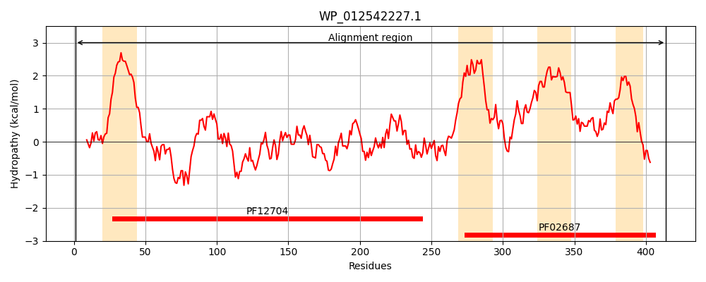
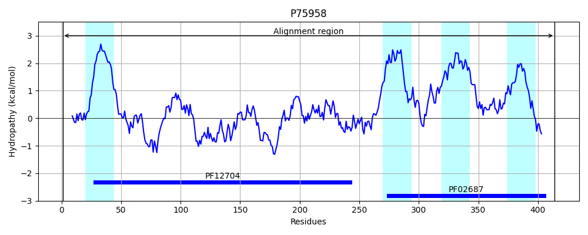
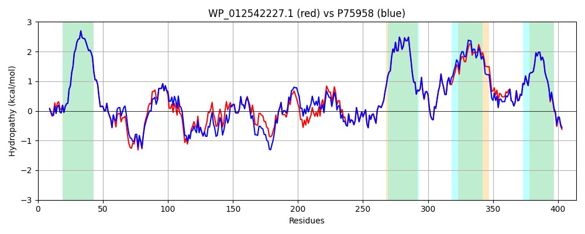

Hit Accession: P75958
Hit TCID: 3.A.1.125.1
Hit Description: gnl|BL_ORD_ID|11427 gnl|TC-DB|P75958|3.A.1.125.1 Lipoprotein releasing system transmembrane protein lolE - Escherichia coli.
Mach Len: 414
e:0.000000
Query TMS Count : 4
Hit TMS Count: 4
TMS-Overlap Score: 4.450000
Predicted Substrates:CHEBI:6495;lipoprotein
BLAST Alignment:
Score: 1847 , Bit scores: 716 bits, E-value: 0.0e+00, Alignment length: 414, Percentage identity: 88
Query: 1 MASPLSLLIALRFSRGRRRGGMVSLISVISTIGIALGVAVLIVGLSAMNGFERELNNRVLAVVPHGEIEPVNQPWNNWQEALAKVQKVKGIVAAAPYINFTGLVESGSNMRAIQVKGVDPQQETRLSALPTFVQNNAWAGFKAGEQQVILGKGVADALHVKQGDWVSIMIPNADADHQLLQPKRVRLHVTGILQLSGQLDHSFAMIPMQDAQQYLEMGSSVTGIAIKVTDVFHANKLVRDAGEVTNSYVYIKSWIGTYGYMYRDIQMIRAIMYLAMVLVIGVACFNIVSTLVMAVKDKSGDIAVLRTLGAKDGLIRAIFVWYGLLAGSVGSLFGVVIGVICALNLTSIINGIEYLIGHKFLSGDIYFIDFLPSELHWLDVFYVLVTALLLSLLASWYPARRASRIDPARVLSGQ 414
MA PLSLLI LRFSRGRRRGGMVSLISVISTIGIALGVAVLIVGLSAMNGFERELNNR+LAVVPHGEIE V+QPW NWQEAL VQKV GI AAAPYINFTGLVESG+N+RAIQVKGV+PQQE RLSALP+FVQ +AW FKAGEQQ+I+GKGVADAL VKQGDWVSIMIPN++ +H+L+QPKRVRLHV GILQLSGQLDHSFAMIP+ DAQQYL+MGSSV+GIA+K+TDVF+ANKLVRDAGEVTNSYVYIKSWIGTYGYMYRDIQMIRAIMYLAMVLVIGVACFNIVSTLVMAVKDKSGDIAVLRTLGAKDGLIRAIFVWYGLLAG GSL GV+IGV+ +L LT II IE LIGH+FLS DIYFIDFLPSELHWLDVFYVLVTALLLSLLASWYPARRAS IDPARVLSGQ
Sbjct: 1 MAMPLSLLIGLRFSRGRRRGGMVSLISVISTIGIALGVAVLIVGLSAMNGFERELNNRILAVVPHGEIEAVDQPWTNWQEALDHVQKVPGIAAAAPYINFTGLVESGANLRAIQVKGVNPQQEQRLSALPSFVQGDAWRNFKAGEQQIIIGKGVADALKVKQGDWVSIMIPNSNPEHKLMQPKRVRLHVAGILQLSGQLDHSFAMIPLADAQQYLDMGSSVSGIALKMTDVFNANKLVRDAGEVTNSYVYIKSWIGTYGYMYRDIQMIRAIMYLAMVLVIGVACFNIVSTLVMAVKDKSGDIAVLRTLGAKDGLIRAIFVWYGLLAGLFGSLCGVIIGVVVSLQLTPIIEWIEKLIGHQFLSSDIYFIDFLPSELHWLDVFYVLVTALLLSLLASWYPARRASNIDPARVLSGQ 414 | Protein Hydropathy Plots: |
|---|
|  |  |
Pairwise Alignment-Hydropathy Plot:
|
|---|
|  |